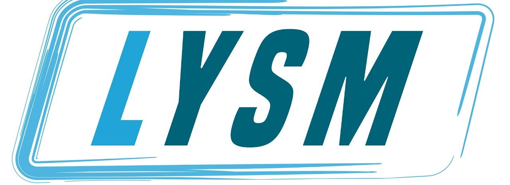
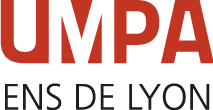
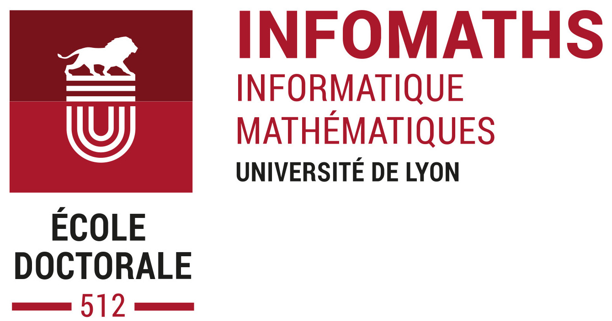
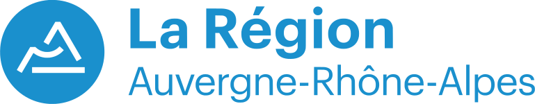
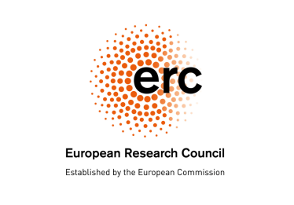
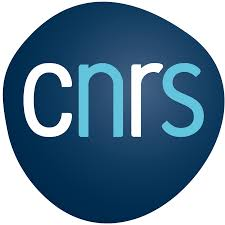
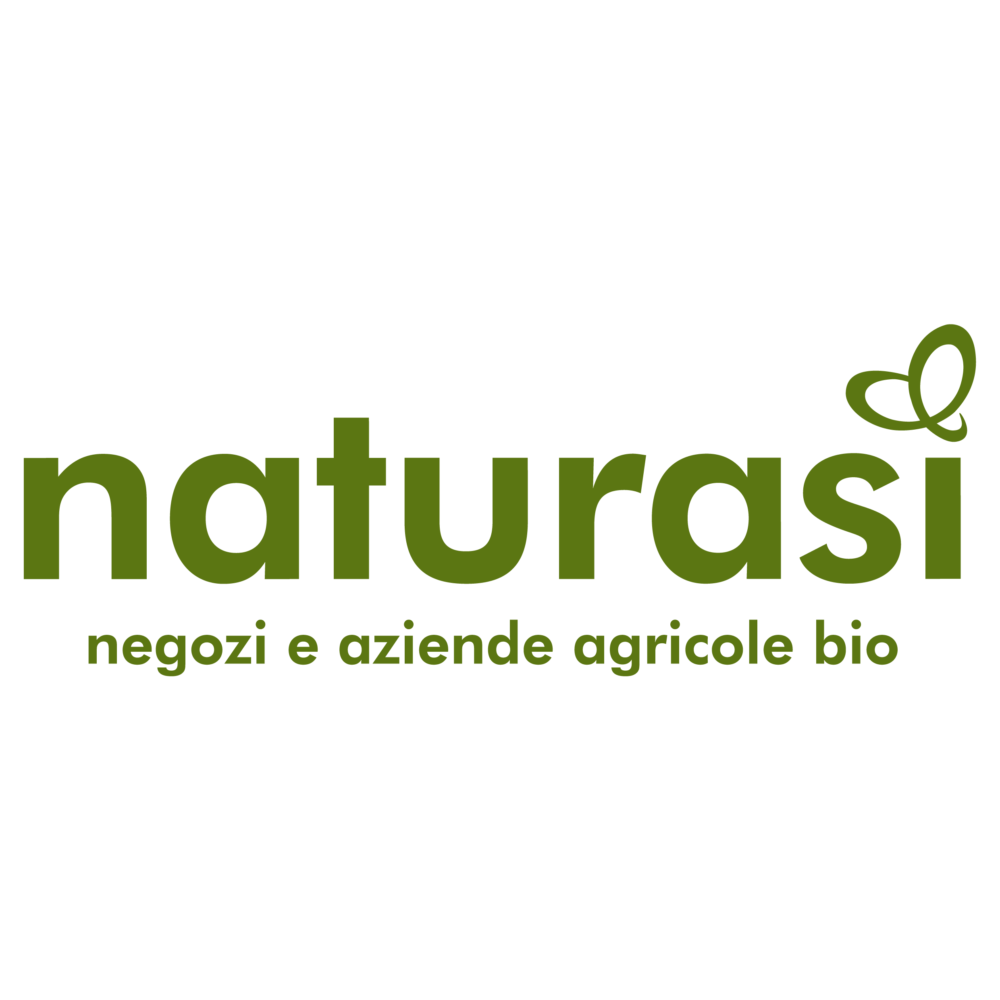

The first CARE conference
More than math
The main idea that led us in organizing this conference was that of creating a space where to discuss more than just mathematics. We are a group of early career researchers in algebra, representation theory and algebraic geometry. As young academics we are drawn to spaces that give us the opportunity to expand our mathematical horizons while also talking about the problems that affect our daily lives, in academia and beyond. The conference CARE is our way of creating such space. We wanted to do that while keeping mathematical research as a central topic, in order to create an event where participants could actively learn something new and create personal connections and collaborations with neighbouring people.
Some numbers on the outcome
100%would come to a 2° edition
70+participants
18Math Talks
4Ethics Talks
2mini-courses
71%got interested in new subjects
A lotof Frogs
59.67 kg.CO2eper person
81%better environment than other confs
# Feedbacks are computed from the responses to the post-conference survey (50% of participants responded). Carbon footprint is computed with respect to a survey that was filled by 72% of participants.
What did we do?
Our main goals were the following:
- Scientifically: create a space for early career researchers to discuss mathematics, learn something new, find collaborators, and get interested in neighbouring subjects while experiencing a friendly and inclusive environment without any kind of peer pressure or competition;
- Socially: organize an event where mathematical research was paralleled by the opportunity to reflect and learn about the ethics of our academic lives.
- Environmentally: we wanted to minimize the environmental impact of the conference at its minimum, we are well awere that generally speaking mathematical venues require a lot of people travelling by plane for instance.
- Local collaborations: in mathematical communities is a common practice to have one's collaborators in very far apart locations in the world. We wanted to encourage a the re-establishment of local collaborations in our community.
How did we achieve all these goals?
- Scientifically. we organized a program that revolved around mini-courses and contributed talks. The courses were be designed to be as accessible as possible without sacrificing mathematical depth, so that everyone participating could learn something from following them. These mini-courses will also highlight accessible open problems, offering participants the opportunity to engage with them in future research. We reserved the time of the afternoon for talks. We dedicated this time to early career researchers such as PhDs and post-docs and in particular to people who are seeking for collaboration with other mathematicians. To create a friendly and inclusive environmente, we made sure that the participants warmly welcomed, we were clear on the code of conduct that everyone in the conference had to follow and we were careful to enforce it;
- Socially. to encourage the reflection and discussion on ethical issues we planned ethics talks at the end of each day that were followed by a discussion sessions. We took care of making the discussion sessions as inclusive as possible, by moderating them accordingly. Each day we posted in the conference's common locales a white poster with an ethical question (suggested by the speaker of the day) where participants could write their personal answers. When selecting participants and speaker for the talks, we strived for gender equality.
- Environmentally. We planned the event to be reachable by train: we choose Lyon as our venue because it is a well connected city accessible by train from many places in Europe, we financed extra nights of stay for people coming by train from far away. We did not finance any plane travel. All our meals were vegetarian with vegan options and we used eco-cups in place of usual plastic ones;
- Local collaborations. We encouraged local collaborations by giving open problems during the mini-courses, and making sure that speakers seeking for a collabotor on a project were granded to speak. In the venue of the conference there were many places where participants could talk with eachother in fron of a blackboard.
Organizing Committee
- Alice Bouillet (Ruhr Universität Bochum)
- Luca Casarin (University of Rome "La Sapienza")
- Luca Francone (University of Rome "Tor Vergata")
- Matilde Maccan (Ruhr Universität Bochum)
- Tal Gottesman (Ruhr Universität Bochum)
Scientific Committee
- Claire Amiot (Université Grenoble Alpes)
- Gustavo Jasso (University of Cologne)
- Markus Reineke (Ruhr-Universität Bochum)
- Simon Riche (Université Clermont Auvergne)
- Daniele Valeri (University of Rome "La Sapienza")
Our mini-courses lecturers
Check out our scientific program
Our ethics speakers
Check out our ethics program
Our math talks speakers
Special thanks:
Our sponsors






